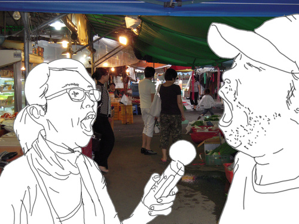

여름에 처음 왔을 때 석수시장은 정지해 있는 공간 같았다. 이동하는 사람들도 잘 보이지 않았고 몇몇 닫히거나 비어있는 가게들도 보였다. 주인들도 밖에서 손님을 기다리기 보다 뜨거운 햇빛을 피해 가게 안에서 텔레비전 시청을 하면서 깊게 하품을 내뱉는 모습이 물건들 사이로 간혹 보일 뿐이었다.
재래시장의 전체적인 침체는 편리해지고 단축된 이동수단 때문에 넓어진 생활권과 그에 따라 희미해진 정주의식과 가족유대감으로 해석 될 수 있다. 또한 인근에 있는 가장 주된 고객층인 아파트단지 주민들은 직장이나 자녀의 학교를, 최종적으로는 끊임없이 인 서울(in Seoul) 을 꿈꾸는 사람들이다. 그러니 굳이 안양 내에서 좀더 깊은 유대감과 그에 따른 약간의 노력까지 필요로 하는 재래시장에서의 구매를 별로 반기지 않을 수 있다. 그들 자신이 외부인임을 인식하고 있어서 다소 무뚝뚝하게 보일 수 있는 가게 주인에게 말을 붙이는 것 보다, 외부인임을 드러낼 필요도 없고 제품 질도 내가 보고 선택할 수 있으며 마음에 안 들면 그냥 나와버려도 아무런 심적 부담이 없는 대형마트를 선호하게 되는 것이다.
내가 처음 보았던 재래 상인의 하품처럼 사람들이 하품을 왜 하는지 아직도 그 이유는 명확히 밝혀지지 않았으나 졸리거나 지루할 때 사람들이 그에 대한 무의식적 신체적 반응이라고 알고 있다. 또한 타인에게도 전염이 되는 행동으로 상대방이 하품하는 모습뿐 아니라 소리만으로도 전염이 된다. (이는 암스테르담에서 지난 2005년 라디오 아트프로젝트 빔랩(BEAMLAP) 중에서 본인이 발표한 퍼포먼스 ‘10번의 하품’을 통해 확인됐다.) 하지만 하품은 몸이 피로해진 상태를 스스로를 이완하고 신선한 산소를 다시 보충함으로써 머리를 환기시켜 두뇌까지 자극 받게 되는 재생적 능력이 강한 행동이라는 학설도 있다. 실제로 본인 또한 극도로 긴장한 순간 이라든지 순발력이 필요한 순간이 있으면 저절로 기지개를 펴면서 하품을 같이 하는 것과 같고, 단거리 육상 선수가 출발 전 하품을 하고 성관계직전 무의식적으로 나오는 하품 또한 이런 학설을 뒷받침한다.
우연히 접하게 된 주인아주머니의 하품이 생활의 노곤함을 보이는 행동일수도 있지만 새로운 시작을 하려는 하품일 수 있는 것이다. 혹은 무의식적인 한번의 하품이 무언가 떠들고 보여주고 있는 상대방을 무력화시키면서 ‘나는 현재 네가 하는 것에 관심이 없다’라는 것을 드러내는, 그 어떤 것보다도 강력한 저항일 수도 있다. 이렇게 석수시장의 다양한 하품을 채취하고 그것이 보여주거나 들려줄 수 있는 여러 가지 의미를 드러나도록 한다. 또한 이 프로젝트로 하여금 그들의 하품이 보는 사람들로 하여금 그에 대한 무의식적인 반응(또 다른 하품의 생산)을 통해 단지 작품과 관객뿐 아니라 새로운 관계가 생기도록 돕는다.
When I visited Seoksu Market in summer, it looked as if time had stopped. There were almost no people walking by. The few shops were closed or empty. The shop keepers were in their shops hiding from the sun rather than outside waiting for customers. They could be seen watching TV or yawning behind the displays of goods.
The general stagnation in old market places is caused by the changes inresidential areas caused by the development of more convenient housing transportation, the consequent weakening of the identity we derive from our place of domicile, and loosening family ties. The residents of nearby apartments all dream of moving to Seoul for a better job or for a better education for their children. Therefore, they do not prefer going to market places where the shopper and vendor must establish a relationship in addition to a stronger sense of community shared between Anyang residents and shop keepers. Rather than going to a small shop in the market place and trying to interact with unfriendly clerks to buy goods, people from outside, choose to go to supermarkets where there is no psychological pressure. In supermarkets you choose what to buy by comparing the qualities of many products and you can walk out empty handed if their goods do not satisfy your needs.
Although there is no clear explanation for why the clerks I saw in the market place yawned, I know that yawning is a natural reaction to sleepiness and boredom. Also, yawning is an infectious reaction. You yawn not only when you see a person yawning but also when you hear someone yawning, as I discovered in my performance '10 times yawning,' which was a part of a radio art project called BEAMLAP held in 2005. However, there is a theory that suggests that yawning is a mechanism with a strong reviving effect which, by providing fresh oxygen, awakens the brain. In my case, I automatically stretch and yawn whenever I feel extreme anxiety or need to relax. The fact that an athlete yawns before he starts and people unconsciously yawn right before having sex also supports the theory.
The yawn of the clerk lady I saw might also be a mark of a new beginning. It can also be a very powerful resistance that leaves loud opponents powerless and communicates to them; "I have no interest in you." The project collects various yawns from Seoksu Market and shows the audiences the meanings of these yawns. Moreover, this project strives to create a relationship between the works and the audiences through audiences' reactions to the exhibited reproduction of yawning.
2009-01-08
saptap.egloos.com 에서 옮김